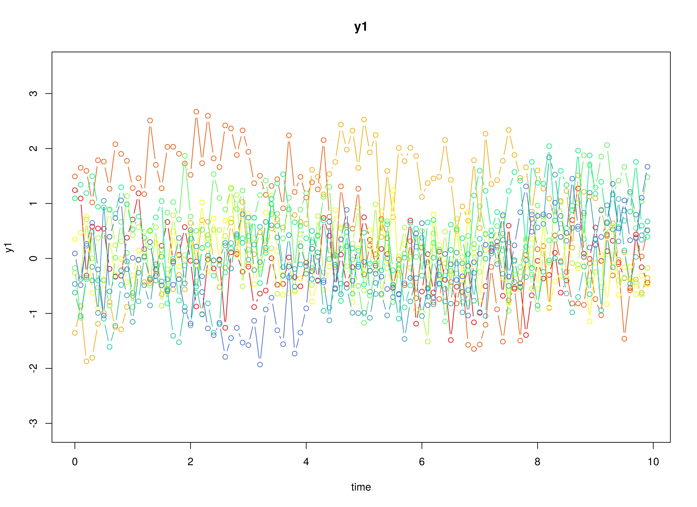
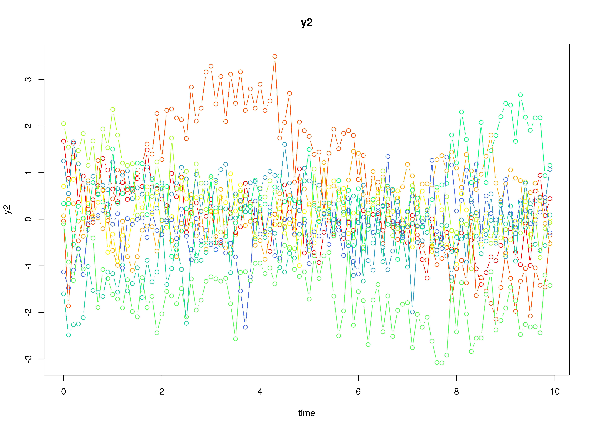
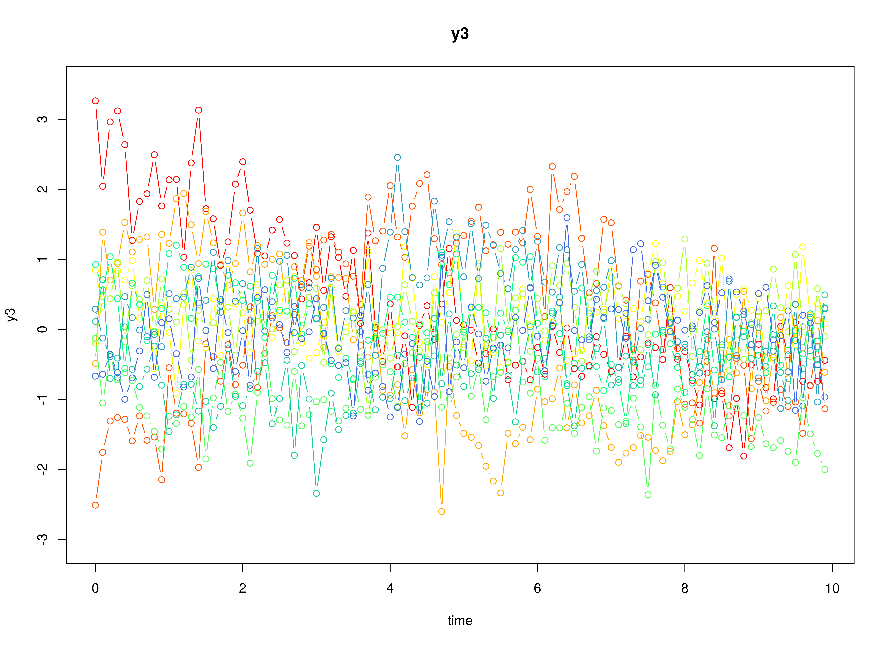

Multivariate Normal (Continuous-Time Vector Autoregressive Model)
Ivan Jacob Agaloos Pesigan
Source:vignettes/mvn-ct-var.Rmd
mvn-ct-var.RmdModel
The measurement model is given by \[\begin{equation} \mathbf{y}_{i, t} = \boldsymbol{\nu} + \boldsymbol{\Lambda} \boldsymbol{\eta}_{i, t} + \boldsymbol{\varepsilon}_{i, t}, \quad \mathrm{with} \quad \boldsymbol{\varepsilon}_{i, t} \sim \mathcal{N} \left( \mathbf{0}, \boldsymbol{\Theta} \right) \end{equation}\] where \(\mathbf{y}_{i, t}\), \(\boldsymbol{\eta}_{i, t}\), and \(\boldsymbol{\varepsilon}_{i, t}\) are random variables and \(\boldsymbol{\nu}\), \(\boldsymbol{\Lambda}\), and \(\boldsymbol{\Theta}\) are model parameters. \(\mathbf{y}_{i, t}\) represents a vector of observed random variables, \(\boldsymbol{\eta}_{i, t}\) a vector of latent random variables, and \(\boldsymbol{\varepsilon}_{i, t}\) a vector of random measurement errors, at time \(t\) and individual \(i\). \(\boldsymbol{\nu}\) denotes a vector of intercepts, \(\boldsymbol{\Lambda}\) a matrix of factor loadings, and \(\boldsymbol{\Theta}\) the covariance matrix of \(\boldsymbol{\varepsilon}\).
An alternative representation of the measurement error is given by \[\begin{equation} \boldsymbol{\varepsilon}_{i, t} = \boldsymbol{\Theta}^{\frac{1}{2}} \mathbf{z}_{i, t}, \quad \mathrm{with} \quad \mathbf{z}_{i, t} \sim \mathcal{N} \left( \mathbf{0}, \mathbf{I} \right) \end{equation}\] where \(\mathbf{z}_{i, t}\) is a vector of independent standard normal random variables and \(\left( \boldsymbol{\Theta}^{\frac{1}{2}} \right) \left( \boldsymbol{\Theta}^{\frac{1}{2}} \right)^{\prime} = \boldsymbol{\Theta}\) .
The dynamic structure is given by \[\begin{equation} \mathrm{d} \boldsymbol{\eta}_{i, t} = \boldsymbol{\Phi} \left( \boldsymbol{\eta}_{i, t} - \boldsymbol{\mu} \right) \mathrm{d}t + \boldsymbol{\Sigma}^{\frac{1}{2}} \mathrm{d} \mathbf{W}_{i, t} \end{equation}\] where \(\boldsymbol{\mu}\) is the long-term mean or equilibrium level, \(\boldsymbol{\Phi}\) is the rate of mean reversion, determining how quickly the variable returns to its mean, \(\boldsymbol{\Sigma}\) is the matrix of volatility or randomness in the process, and \(\mathrm{d}\boldsymbol{W}\) is a Wiener process or Brownian motion, which represents random fluctuations.
Data Generation
Notation
Let \(t = 100\) be the number of time points and \(n = 100\) be the number of individuals.
Let the measurement model intecept vector \(\boldsymbol{\nu}\) be given by
\[\begin{equation} \boldsymbol{\nu} = \left( \begin{array}{c} 0 \\ 0 \\ 0 \\ \end{array} \right) . \end{equation}\]
Let the factor loadings matrix \(\boldsymbol{\Lambda}\) be given by
\[\begin{equation} \boldsymbol{\Lambda} = \left( \begin{array}{ccc} 1 & 0 & 0 \\ 0 & 1 & 0 \\ 0 & 0 & 1 \\ \end{array} \right) . \end{equation}\]
Let the measurement error covariance matrix \(\boldsymbol{\Theta}\) be given by
\[\begin{equation} \boldsymbol{\Theta} = \left( \begin{array}{ccc} 0.2 & 0 & 0 \\ 0 & 0.2 & 0 \\ 0 & 0 & 0.2 \\ \end{array} \right) . \end{equation}\]
Let the initial condition \(\boldsymbol{\eta}_{0}\) be given by
\[\begin{equation} \boldsymbol{\eta}_{0} \sim \mathcal{N} \left( \boldsymbol{\mu}_{\boldsymbol{\eta} \mid 0}, \boldsymbol{\Sigma}_{\boldsymbol{\eta} \mid 0} \right) \end{equation}\]
\[\begin{equation} \boldsymbol{\mu}_{\boldsymbol{\eta} \mid 0} = \left( \begin{array}{c} 0 \\ 0 \\ 0 \\ \end{array} \right) \end{equation}\]
\[\begin{equation} \boldsymbol{\Sigma}_{\boldsymbol{\eta} \mid 0} = \left( \begin{array}{ccc} 0.01 & 0 & 0 \\ 0 & 0.01 & 0 \\ 0 & 0 & 0.01 \\ \end{array} \right) . \end{equation}\]
Let the long-term mean vector \(\boldsymbol{\mu}\) be given by
\[\begin{equation} \boldsymbol{\mu} = \left( \begin{array}{c} 0 \\ 0 \\ 0 \\ \end{array} \right) . \end{equation}\]
Let the drift matrix \(\boldsymbol{\Phi}\) be normally distributed with the following means
\[\begin{equation} \left( \begin{array}{ccc} -0.357 & 0 & 0 \\ 0.771 & -0.511 & 0 \\ -0.45 & 0.729 & -0.693 \\ \end{array} \right) \end{equation}\]
and covariance matrix
\[\begin{equation} \left( \begin{array}{ccc} 0.01 & 0 & 0 & 0 & 0 & 0 & 0 & 0 & 0 \\ 0 & 0.01 & 0 & 0 & 0 & 0 & 0 & 0 & 0 \\ 0 & 0 & 0.01 & 0 & 0 & 0 & 0 & 0 & 0 \\ 0 & 0 & 0 & 0.01 & 0 & 0 & 0 & 0 & 0 \\ 0 & 0 & 0 & 0 & 0.01 & 0 & 0 & 0 & 0 \\ 0 & 0 & 0 & 0 & 0 & 0.01 & 0 & 0 & 0 \\ 0 & 0 & 0 & 0 & 0 & 0 & 0.01 & 0 & 0 \\ 0 & 0 & 0 & 0 & 0 & 0 & 0 & 0.01 & 0 \\ 0 & 0 & 0 & 0 & 0 & 0 & 0 & 0 & 0.01 \\ \end{array} \right) . \end{equation}\]
NOTE: This example depends on the development version of simStateSpace (1.2.1.9000).
The SimPhiN function from the simStateSpace package generates random drift matrices from the multivariate normal distribution. Note that the function generates drift matrices that are stable.
Let the dynamic process noise covariance matrix \(\boldsymbol{\Sigma}\) be given by
\[\begin{equation} \boldsymbol{\Sigma} = \left( \begin{array}{ccc} 0.1 & 0 & 0 \\ 0 & 0.1 & 0 \\ 0 & 0 & 0.1 \\ \end{array} \right) . \end{equation}\]
Let \(\Delta t = 0.1\).
R Function Arguments
n
#> [1] 100
time
#> [1] 100
delta_t
#> [1] 0.1
mu0
#> [[1]]
#> [1] 0 0 0
sigma0
#> [,1] [,2] [,3]
#> [1,] 0.01 0.00 0.00
#> [2,] 0.00 0.01 0.00
#> [3,] 0.00 0.00 0.01
sigma0_l
#> [[1]]
#> [,1] [,2] [,3]
#> [1,] 0.1 0.0 0.0
#> [2,] 0.0 0.1 0.0
#> [3,] 0.0 0.0 0.1
mu
#> [[1]]
#> [1] 0 0 0
# first phi in the list of length n
phi[[1]]
#> [,1] [,2] [,3]
#> [1,] -0.4101502 0.02987347 0.09881764
#> [2,] 0.8531253 -0.47051414 0.12907652
#> [3,] -0.2282550 0.66648281 -0.72701868
sigma
#> [,1] [,2] [,3]
#> [1,] 0.1 0.0 0.0
#> [2,] 0.0 0.1 0.0
#> [3,] 0.0 0.0 0.1
sigma_l
#> [[1]]
#> [,1] [,2] [,3]
#> [1,] 0.3162278 0.0000000 0.0000000
#> [2,] 0.0000000 0.3162278 0.0000000
#> [3,] 0.0000000 0.0000000 0.3162278
nu
#> [[1]]
#> [1] 0 0 0
lambda
#> [[1]]
#> [,1] [,2] [,3]
#> [1,] 1 0 0
#> [2,] 0 1 0
#> [3,] 0 0 1
theta
#> [,1] [,2] [,3]
#> [1,] 0.2 0.0 0.0
#> [2,] 0.0 0.2 0.0
#> [3,] 0.0 0.0 0.2
theta_l
#> [[1]]
#> [,1] [,2] [,3]
#> [1,] 0.4472136 0.0000000 0.0000000
#> [2,] 0.0000000 0.4472136 0.0000000
#> [3,] 0.0000000 0.0000000 0.4472136Using the SimSSMVARIVary Function from the simStateSpace Package to Simulate Data
library(simStateSpace)
sim <- SimSSMOUIVary(
n = n,
time = time,
delta_t = delta_t,
mu0 = mu0,
sigma0_l = sigma0_l,
mu = mu,
phi = phi,
sigma_l = sigma_l,
nu = nu,
lambda = lambda,
theta_l = theta_l
)
data <- as.data.frame(sim)
head(data)
#> id time y1 y2 y3
#> 1 1 0.0 0.2498385 0.07906124 -0.16629221
#> 2 1 0.1 0.5633032 0.01741791 0.14494905
#> 3 1 0.2 -0.2225339 -0.43546978 0.26119933
#> 4 1 0.3 -0.3063337 0.18457080 -0.62072064
#> 5 1 0.4 0.3347948 0.03868089 0.05410158
#> 6 1 0.5 0.5684380 0.33269594 0.39418663
plot(sim)
Multivariate Meta-Analysis
The Meta function performs multivariate meta-analysis using the estimated drift matrices \(\boldsymbol{\Phi}\) and the corresponding sampling variance-covariance matrix for each individual \(i\).
meta <- Meta(
fit,
ncores = parallel::detectCores()
)
#> Running Model with 54 parameters
#>
#> Beginning initial fit attempt
#> Running Model with 54 parameters
#>
#> Lowest minimum so far: 319959.685199841
#>
#> Solution found#>
#> Solution found! Final fit=319959.69 (started at 4390996.3) (1 attempt(s): 1 valid, 0 errors)
#> Start values from best fit:
#> 2.57045041198161,0.468930980785761,-0.257886492262304,-0.66936204825407,0.0784236354916846,0.152774198312384,0.37398966078404,-0.00976069102585751,-0.146573050430463,5.62833139918228,-2.10996267631426,-3.9019916992487,0.044871052757345,0.650732427923535,1.6430092493141,-0.245643663015824,-0.121719665010525,5.22531273576206,0.624805441252129,-0.264687534883276,-1.7319366038225,-3.11317199471195,1.92875005960373,0.32077193697664,3.36295308640622,0.264141173675346,0.380519949505941,-0.0263904148146097,-0.258067688163512,0.0068428616771322,2.94310588868953,0.493251739005763,0.143370790528556,-0.496025216888125,-0.0340433280944094,3.78623237854051,0.333249676264271,-1.7569108922083,-0.107235460620243,3.55465663533645,-0.181202831076479,-0.139898184135355,3.51039609602785,0.0353200447563189,2.78691618958451,-9.6193275115745,1.89961715171848,-0.736353451055666,1.26514556260112,-8.7418562213028,1.34585402962534,-0.0718892173122352,1.47643596241372,-9.10743118282062
summary(meta)
#> est se z p 2.5% 97.5%
#> sigma_11 6.6072 0.0934 70.7094 0.0000 6.4241 6.7904
#> sigma_21 1.2054 0.1463 8.2370 0.0000 0.9186 1.4922
#> sigma_31 -0.6629 0.1452 -4.5654 0.0000 -0.9475 -0.3783
#> sigma_41 -1.7206 0.1362 -12.6354 0.0000 -1.9875 -1.4537
#> sigma_51 0.2016 0.0763 2.6416 0.0083 0.0520 0.3511
#> sigma_61 0.3927 0.1095 3.5861 0.0003 0.1781 0.6073
#> sigma_71 0.9613 0.1297 7.4103 0.0000 0.7071 1.2156
#> sigma_81 -0.0251 0.1135 -0.2211 0.8250 -0.2475 0.1973
#> sigma_91 -0.3768 0.0725 -5.1951 0.0000 -0.5189 -0.2346
#> sigma_22 31.8980 0.4512 70.6930 0.0000 31.0136 32.7824
#> sigma_32 -11.9965 0.3410 -35.1806 0.0000 -12.6648 -11.3282
#> sigma_42 -22.2756 0.3702 -60.1709 0.0000 -23.0012 -21.5500
#> sigma_52 0.2893 0.1677 1.7250 0.0845 -0.0394 0.6181
#> sigma_62 3.7342 0.2439 15.3089 0.0000 3.2561 4.2123
#> sigma_72 9.4228 0.2997 31.4398 0.0000 8.8354 10.0102
#> sigma_82 -1.3871 0.2504 -5.5402 0.0000 -1.8779 -0.8964
#> sigma_92 -0.7538 0.1593 -4.7329 0.0000 -1.0660 -0.4416
#> sigma_33 31.8223 0.4503 70.6765 0.0000 30.9399 32.7048
#> sigma_43 11.6705 0.3179 36.7103 0.0000 11.0474 12.2936
#> sigma_53 -1.4980 0.1681 -8.9129 0.0000 -1.8274 -1.1686
#> sigma_63 -10.4623 0.2625 -39.8580 0.0000 -10.9768 -9.9479
#> sigma_73 -19.8304 0.3463 -57.2566 0.0000 -20.5093 -19.1516
#> sigma_83 10.5991 0.2711 39.0984 0.0000 10.0678 11.1305
#> sigma_93 1.9708 0.1601 12.3117 0.0000 1.6570 2.2845
#> sigma_44 27.3734 0.3873 70.6823 0.0000 26.6144 28.1325
#> sigma_54 0.4953 0.1555 3.1863 0.0014 0.1906 0.8000
#> sigma_64 -2.4439 0.2246 -10.8793 0.0000 -2.8841 -2.0036
#> sigma_74 -8.6952 0.2777 -31.3142 0.0000 -9.2395 -8.1510
#> sigma_84 1.3023 0.2318 5.6186 0.0000 0.8480 1.7565
#> sigma_94 0.7965 0.1476 5.3964 0.0000 0.5072 1.0858
#> sigma_55 8.8099 0.1246 70.7151 0.0000 8.5657 9.0540
#> sigma_65 2.0518 0.1282 16.0036 0.0000 1.8005 2.3031
#> sigma_75 1.3421 0.1498 8.9599 0.0000 1.0485 1.6356
#> sigma_85 -2.0503 0.1328 -15.4415 0.0000 -2.3106 -1.7901
#> sigma_95 -0.2002 0.0837 -2.3928 0.0167 -0.3643 -0.0362
#> sigma_66 18.1700 0.2570 70.6899 0.0000 17.6663 18.6738
#> sigma_76 7.8405 0.2284 34.3320 0.0000 7.3929 8.2882
#> sigma_86 -10.4968 0.2158 -48.6443 0.0000 -10.9197 -10.0738
#> sigma_96 -1.0774 0.1206 -8.9321 0.0000 -1.3138 -0.8410
#> sigma_77 25.2991 0.3579 70.6899 0.0000 24.5976 26.0005
#> sigma_87 -7.7057 0.2354 -32.7331 0.0000 -8.1671 -7.2443
#> sigma_97 -1.7915 0.1428 -12.5456 0.0000 -2.0714 -1.5116
#> sigma_88 19.5356 0.2764 70.6882 0.0000 18.9939 20.0773
#> sigma_98 1.0029 0.1250 8.0239 0.0000 0.7579 1.2478
#> sigma_99 7.9396 0.1123 70.7130 0.0000 7.7196 8.1597
#> mu_1 -9.6193 0.0257 -374.2367 0.0000 -9.6697 -9.5689
#> mu_2 1.8996 0.0565 33.6262 0.0000 1.7889 2.0103
#> mu_3 -0.7364 0.0565 -13.0227 0.0000 -0.8472 -0.6255
#> mu_4 1.2651 0.0523 24.1846 0.0000 1.1626 1.3677
#> mu_5 -8.7419 0.0297 -294.5161 0.0000 -8.8000 -8.6837
#> mu_6 1.3459 0.0426 31.5695 0.0000 1.2623 1.4294
#> mu_7 -0.0719 0.0504 -1.4260 0.1539 -0.1707 0.0269
#> mu_8 1.4764 0.0442 33.4024 0.0000 1.3898 1.5631
#> mu_9 -9.1074 0.0282 -323.2000 0.0000 -9.1627 -9.0522